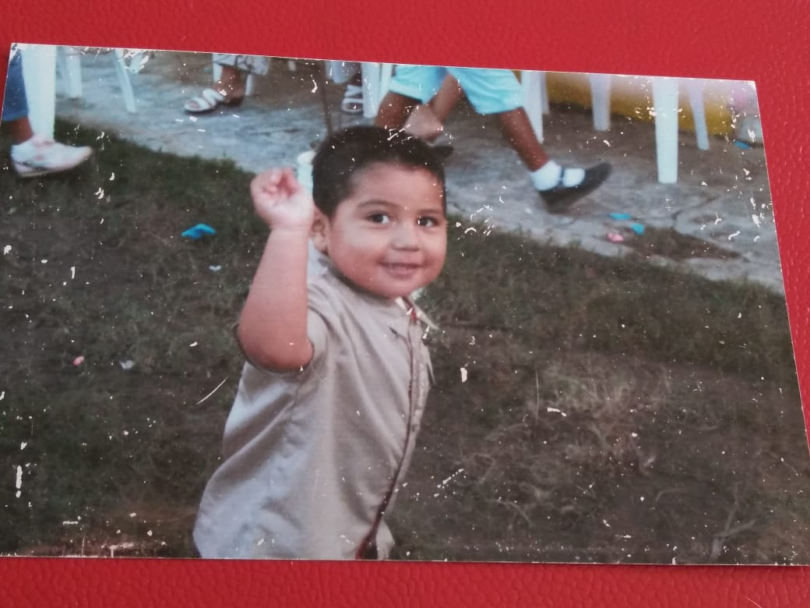
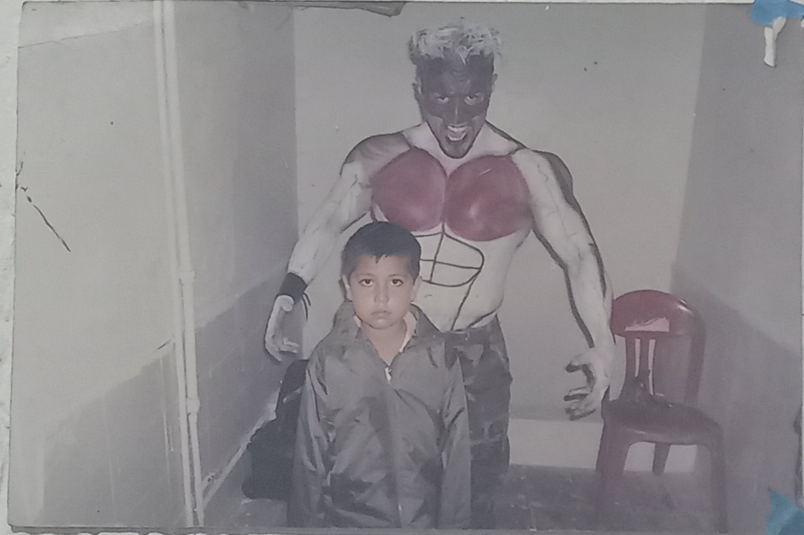

Childhood Stages
0-6 Years
For my childhood, at about 3, I was going to play in the family yard.

Childhood Stages
6-12 Years
At around 6, I was going to visit a friend's house.
A little bit about me
I was born and raised surrounded by warm family moments. During my childhood, I was going to spend hours playing with friends and enjoying my pet. I liked comfortable clothes and exploring my beautiful small town. In those years, I was going to learn about friendship, sharing, and special daily details, especially with my grandparents.
For my childhood, at about 3, I was going to play in the family yard.
At around 6, I was going to visit a friend's house.
Key life events include being forced to dance and having my makeup done, which I did badly. Another special moment was watching wrestling with my grandparents, which was fun.
In my future, I am going to graduate, and I am going to apply my career knowledge in the job field.
For activities and hobbies, I enjoy playing video games, especially action and adventure. I used to draw cartoons as a hobby. Nowadays, I sometimes play basketball with friends.